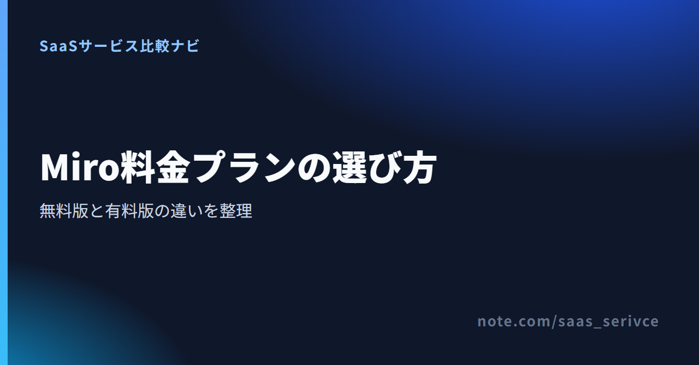
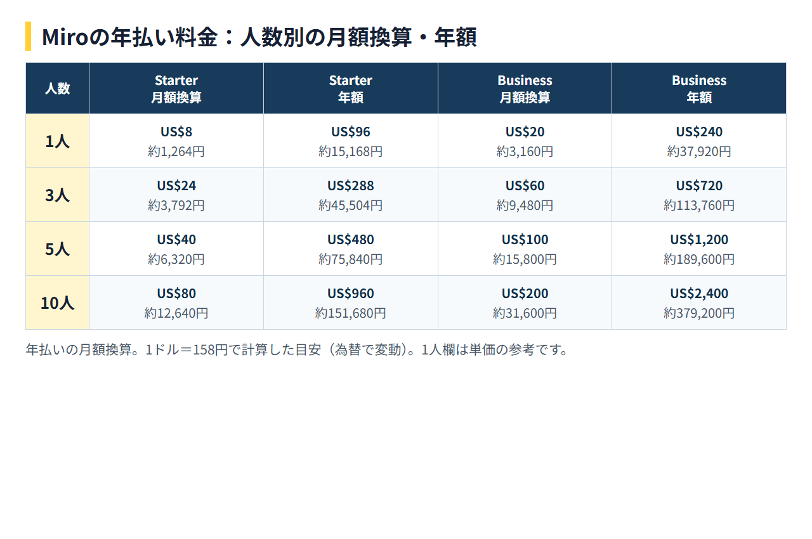

Miroを少人数で使い始めるとき、迷いやすいのが「無料版で足りるのか」「有料版にすると総額はいくらになるのか」です。有料プランは1メンバーあたりの料金なので、表示額だけでなく、利用人数を掛けたチーム総額で判断する必要があります。
この記事では、各プランの料金、無料版で編集できる範囲、支払い、解約条件を公式情報の範囲で整理します。
編集するボードが3件に収まるならFree、4件以上を継続して扱うならStarter以上が候補です。 Businessは複数WorkspaceやSSOなどが必要なチーム、Enterpriseは30メンバー以上で個別見積もりを取りたい組織が検討対象になります。
料金ページでは、1メンバーあたりの金額、請求周期、契約人数を分けて見るのがポイントです。StarterとBusinessは、利用人数に応じてチーム全体の支払額が増えます。
Freeは、少数のボードでMiroの操作を試したい個人やチームの候補です。4件以上のボードを継続して編集するなら、Starter以上を検討します。
4件以上のボードを継続して編集したい場合は、無制限の非公開ボードを利用できるStarterが有力です。必要なボード数と参加メンバー数を先に洗い出せば、契約後の総額を見積もれます。
Businessとの違いは、複数Workspaceやゲスト運用、SSOなどの管理要件です。料金だけでなく、社外メンバーの参加方法と社内の認証ルールも含めて選びます。
Miroの料金プランはFree、Starter、Business、Enterpriseの4つです。Freeは料金なし、StarterとBusinessは1メンバー単位、Enterpriseは30メンバーからの個別見積もりです。
Freeは料金なしで利用でき、編集可能なボードは3件です。契約前に費用をかけず、Miroの操作感を確かめられます。
Starterは、年払い換算で1メンバーあたり月額US$8、月払いではUS$10/メンバー/月です。年払いの1年分は1メンバーあたりUS$96になります。
Businessは、年払い換算で1メンバーあたり月額US$20、月払いではUS$25/メンバー/月です。年払いの1年分は1メンバーあたりUS$240になります。
Enterpriseは30メンバーからの個別見積もりです。利用人数と必要条件をまとめて問い合わせ、見積もりを受け取る形です。
StarterとBusinessの年払い換算額に人数を掛けると、予算の目安は次のようになります。公式情報には最低席数について異なる説明があるため、1人分の数字は単価の参考として載せています。

円換算は1ドル=158円を目安にすると、3人の月額換算はStarterが約3,792円、Businessが約9,480円です。為替で変動するため、ここでは予算感をつかむ1例に絞っています。
公式ページの表示通貨はUSDです。契約画面では、適用される請求周期、メンバー数、最低席数を確認してください。
Miro無料版で確実に編集できるのは3ボードです。無料で操作を試す用途には使えますが、複数案件のボードを並行して更新する運用では有料化が必要になります。
料金ページとプラン解説は「無制限に作成でき、直近3件を編集可能」としています。ただし、Free Planのヘルプには、3ボードに達すると既存ボードを削除するかアップグレードするまで新規作成できないという説明もあります。
したがって、無料版を「過去のボードを残したまま新規作成し続けられるプラン」とは断定できません。
会議、企画、顧客案件などで4件以上のボードを継続して編集したくなった時点が、有料化を検討する目安です。Starterでは無制限の非公開ボードを使えるため、案件ごとにボードを分けて残す運用へ移れます。
社外メンバーを招く場合は参加方法、チーム利用では管理機能も確認します。必要条件がStarterの範囲を超えるなら、Businessと比較します。
有料プランは、ボード数だけでなく、社外共有、Workspace管理、認証の要件で選び分けます。少人数だから必ずStarter、大人数だから必ずBusinessという決め方ではありません。
Starterは、無制限の非公開ボードを使いたいチームの第一候補です。サインイン不要のVisitor編集、高解像度での書き出し、タイマー・投票も利用できます。
AI機能は1メンバーあたり月25 creditsです。複数ボードの継続運用と、会議やワークショップに必要な基本機能がそろえばよい場合はStarterから検討できます。
BusinessはStarterの機能に加え、複数Workspace、無制限Guests、SSOを必要とするチーム向けです。User groupsや双方向連携、AI workflows・agentsも選定理由になります。
部署や案件ごとにWorkspaceを分けたい、社外ゲストを継続的に招きたい、社内のシングルサインオンを必須にしたい場合はBusinessが候補です。
Enterpriseは30メンバー以上を対象とする個別見積もりのプランです。Businessの範囲では足りない全社運用の要件がある場合に、利用人数と必要条件をまとめて問い合わせます。
日本から直接契約する場合は、USD建ての料金とカード払いを前提に検討します。経理処理が必要な事業者は、カード決済後に取得できる請求書・領収書と、請求書払いの条件を分けて考える必要があります。
Miroの年払いは月払いより20%割引です。Starterは年払い換算US$8に対して月払いUS$10、Businessは年払い換算US$20に対して月払いUS$25です。
短期間だけ使うなら月払い、継続利用が決まっているなら年払いが候補です。年払いは途中解約しても未使用期間の返金がありません。割引率だけで決めるのは避けたほうが無難です。
Miroはクレジットカードに対応しており、公式料金ページの表示通貨はUSDです。利用できるカードブランドは購入画面で確認します。
Admin ConsoleのBillingにあるInvoicesから、Stripe発行の請求書・領収書をダウンロードできます。書類は請求先メールにも送付されます。
請求書払いは年払いに限られ、Starterは10席以上、Businessは5席以上が条件です。ただし、一部の国では新規利用できません。日本の新規アカウントが対象になるかは、公式情報からは確認できません。請求書払いが必須なら、契約前にMiroへ利用可否を問い合わせてください。
海外サービス利用時の消費税や仕訳は契約主体や取引条件で判断が変わるため、必要に応じて税理士に確認してください。
ブラウザ版では、ボード、ダッシュボード、設定で日本語を選べます。一部に未翻訳の領域があり、デスクトップアプリやタブレットアプリでは言語設定に制約があります。
有料プランではチケットサポートを利用できますが、公式には回答言語として日本語が明記されていません。日本語での有人対応が必須なら、契約前の問い合わせ項目に含めます。
Miroの料金体系や運用条件が合わなければ、FigJam、Mural、国産ホワイトボードも比較候補です。ここでは各サービスの優劣には立ち入らず、別ツールまで比較を広げたほうがよい条件を整理します。
編集するボードが3件を超える場合、MiroのFreeでは要件を満たせません。また、有料プランはメンバー数に応じて総額が増えるため、大人数で常時利用するチームは年間総額を先に出す必要があります。
別ツールを比べる際は、無料という表示だけで選ばず、編集可能なボード数と課金対象になる人数を同じ条件で比べます。
社内規定で日本円の請求書払いや国内窓口が必要なら、Miroの直接契約が条件を満たすかを先に確認します。カード決済後の請求書・領収書は取得できます。一方で、日本から請求書払いを新規利用できるか、日本語で有人対応を受けられるかは公式情報だけでは判断できません。
どちらかが必須条件なら、候補ごとに請求通貨、支払方法、問い合わせ言語をそろえて比較します。
Miroの有料契約は管理者がBillingから解約できます。手続き後も請求期間の末までは利用可能です。
解約操作はTeam admin、Billing admin、Company adminがBillingから行えます。次回請求を避けるには、契約の更新時期より前に手続きを完了させます。
現在の請求期間が終わるまでは有料機能を利用できますが、未使用期間に対する返金はありません。終了日を確認してから手続きを進めます。
有料期間が終わると、ボードは閲覧専用になりますが、削除はされません。解約した瞬間にデータが消えるわけではありません。
業務データを扱っている場合は、解約前に残すボードと必要な社内手続きを整理しておきましょう。
契約期間、返金条件、終了後にボードが閲覧専用になる点まで見ておくと、月払いと年払いのどちらが自社に合うか判断できます。
有料プランの課金単位と、解約後のボードについて簡潔に答えます。
StarterとBusinessはチーム全体の定額ではなく、1メンバーあたりの料金です。表示額に利用人数を掛け、月額換算と年額の両方で予算を確認します。最低席数について公式情報に食い違いがあるため、少人数契約では購入画面の条件も確認してください。
削除されません。有料期間の終了後は閲覧専用になります。解約後も請求期間末までは利用できますが、未使用期間の返金はありません。
Miroのプラン選びは、編集するボード数、必要な共有・管理機能、利用人数、支払い条件の順に確認すると整理できます。Starterは無制限の非公開ボード、Businessは複数Workspace・無制限Guests・SSOが主な選定ポイントです。
まず編集するボード数と参加メンバー数を数え、次に社外共有と認証の要件を照らし合わせると、Free、Starter、Businessの候補を絞れます。